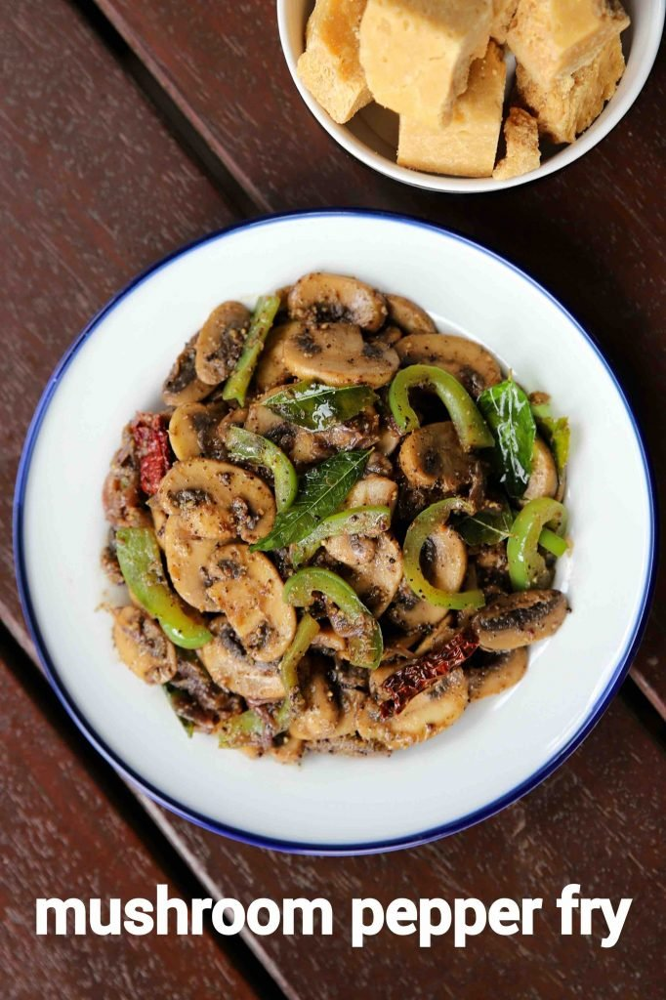

Mushroom Pepper Fry

Description
This is an easy and flavoured South Indian starter or side dish recipe made with sliced mushroom and pepper powder.
Typically made as a side dish to sambar rice or rasam rice combination, but it can also be served as a starter.
Ingredients
- Masala powder
- 2 tbsp ghee
- 1 tsp mustard
- 2 dried red chilli
- Few curry leaves
- 1 inch ginger (finely chopped)
- 1 onion (sliced)
- 300 grams mushroom (sliced)
- Capsicum and Salt
Steps
- In a large kadai heat 2 tbsp ghee and splutter 1 tsp mustard, 2 dried red chilli and few curry leaves. Also, add 1 inch ginger and onion.
- Saute until onions shrink slightly.
- Add 300 grams mushroom and stir fry on high flame. Saute until onions shrink slightly and moisture is released.
- Add capsicum and stir fry for 2 minutes.
- Now add the masala powder and tsp salt. Mix well making sure all the spices are well coated.
- Enjoy the dish.
Back to Home